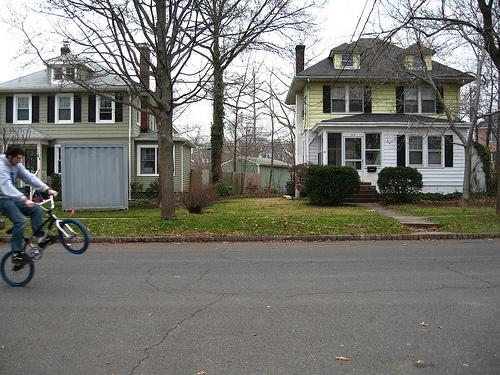
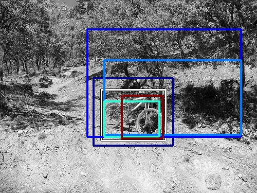
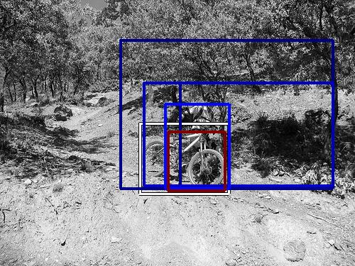
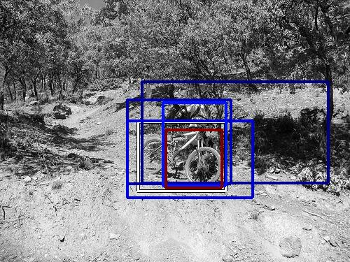
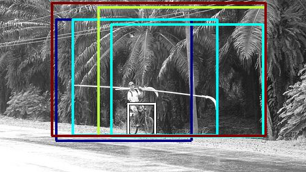

0.337874

0.361673

0.427277

0.443481

0.460482

0.478622

0.489569

0.502056

0.513616
0.532171
| Target image | 0.337874 | 0.361673 | 0.427277 | 0.443481 | 0.460482 | 0.478622 | 0.489569 | 0.502056 | 0.513616 |  0.532171 |
Target image |  2632.330811 |  2270.084717 |  2088.477783 |  1740.365479 |  1714.924438 |  1654.575439 |  1642.033569 |  1614.171143 |  1527.166382 |  1508.616821 |
| Target image  |  5728.610840 |  5353.119141 |  4572.684082 |  4561.538086 |  3344.125732 |  3089.142578 |  3047.272217 |  2946.493652 |  2798.149170 |  2066.323242 |
| Target image  |  4255.352051 |  3919.302246 |  3724.536377 |  3334.542480 |  3189.014648 |  3114.741699 |  3106.849121 |  2820.730469 |  2813.767822 |  2711.643066 |
| Target image  |  4614.326660 |  3931.429443 |  3490.326904 |  3189.593262 |  3175.132324 |  3170.070312 |  3004.086670 |  2722.249512 |  2699.412109 |  2273.114014 |